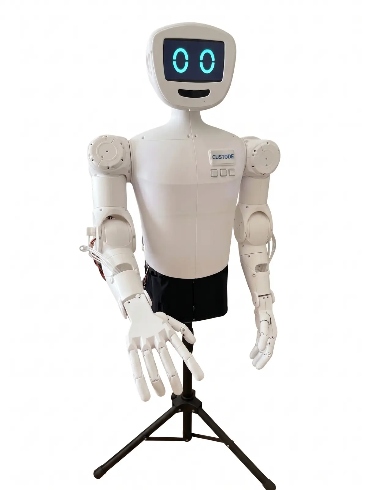

Accesso alla piattaforma
Un ambiente costruito intorno alla persona.
Prima completa il profilo iniziale. Poi scegli liberamente l'interfaccia Junior oppure Next.

Configurazione iniziale
Creiamo il profilo DNAqi
Raccogliamo soltanto le informazioni minime necessarie a predisporre l'interfaccia. In questa dimostrazione non inserire dati sanitari reali.